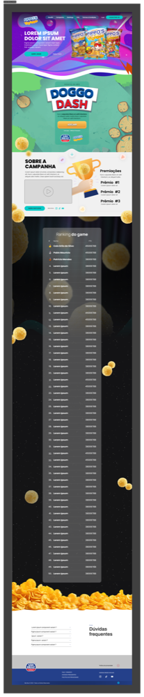
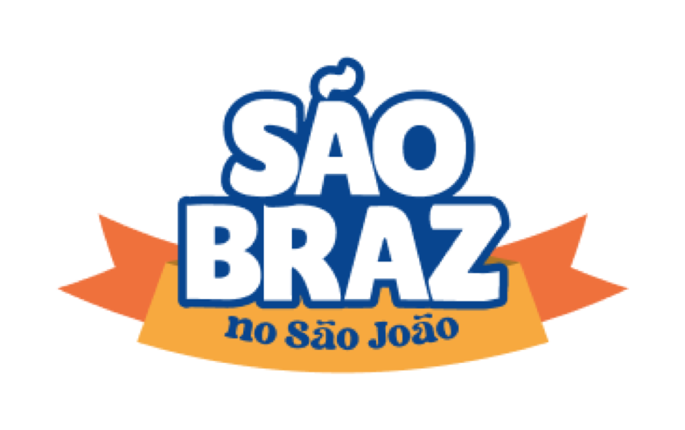
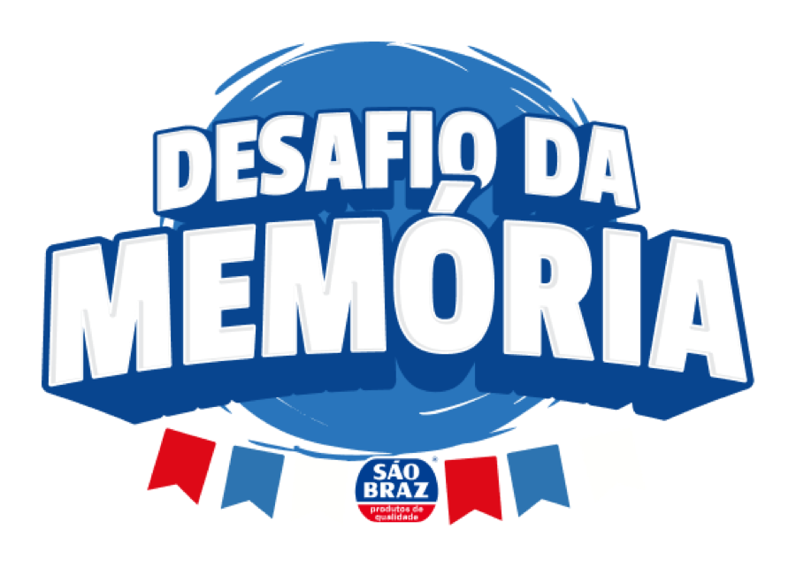
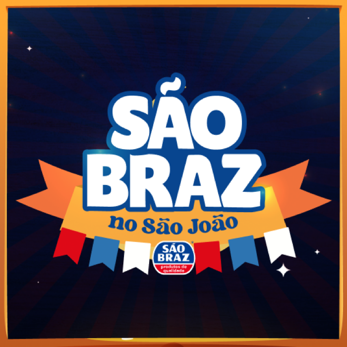
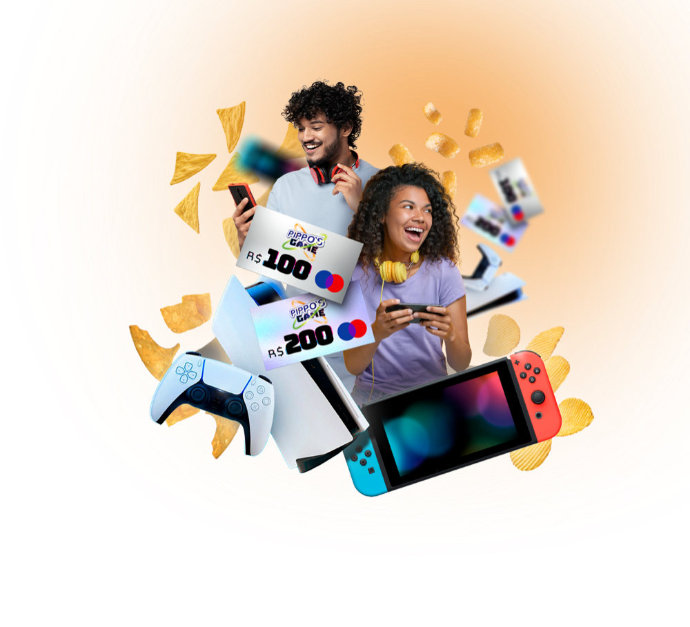

Sobre o projeto
Campanha de São João da São Braz, marca nordestina de alimentos. A ação teve várias frentes digitais com a mesma cara: um site com jogo e ranking de prêmios (Pippo's "Doggo Dash"), um totem de Desafio da Memória com captura de foto no fim, a Roleta Digital e a collab de embalagens. Fiz a direção visual e o design das telas de todas elas.
Demo jogável: Desafio da Memória
Recriação funcional do totem, com a arte original da campanha. Encontre os 6 pares de produtos São Braz. Jogue aqui mesmo →
Processo
1 · Uma linguagem, várias ativações
Eu precisava de um visual que funcionasse em site responsivo, totem em pé e roleta sem parecer três campanhas. Fechei a paleta em azul-marinho São Braz + laranja e vermelho festivos, tipografia display arredondada e o vocabulário clássico de São João: bandeirolas, estrelas, arraial. Cada ativação herda esse kit.
2 · Do KV às peças-mãe
Do key visual saíram os componentes reaproveitáveis: o lockup "São Braz no São João", as cartas de produto, molduras e selos. Montar assim, em vez de peça por peça, foi o que permitiu entregar todas as frentes no mesmo prazo.
3 · O produto é a peça do jogo
No Desafio da Memória, os pares são os produtos (café, flocão, canjica, mistura para bolo), então quem joga passa pela linha inteira. No fim, o totem tira uma foto do participante.
Peças





Resultado
Site, totem e roleta saíram do mesmo kit visual. Não tenho números de participação para mostrar.